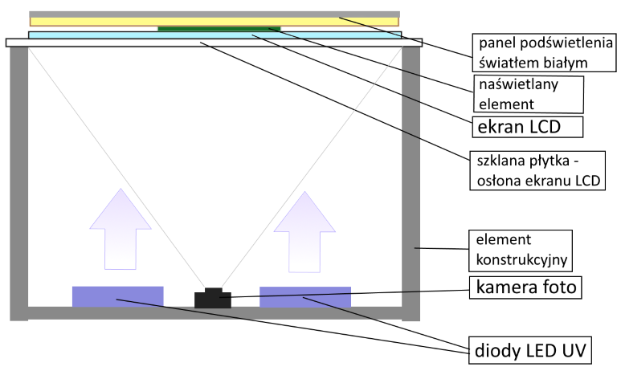

Do budowy zostaną użyte:
-
komputer typu Raspberry Pi (sterownik urządzenia)
-
ekran LCD o wysokiej rozdzielczości (powyżej 500ppi) (ekran roboczy) z usuniętym panelem podświetlenia wraz ze sterownikiem (podłączony do sterownika urządzenia przez standardowe wejście HDMI)
-
kamera o wysokiej rozdzielczości umieszczona nad ekranem roboczym (oś obiektywu przechodzi przez środek ekranu) – podłączona do sterownika urządzenia przez port CSI wg specyfikacji MIPI
-
pomocniczy ekran (np. LCD alfanumeryczny dwulinijkowy) i zestaw przycisków do komunikacji z użytkownikiem (podłączone do sterownika urządzenia przez port GPIO)
-
zestaw diód LED UV o zwiększonej mocy do naświetlania emulsji UV wraz z modułem zasilania sterowanym przez port GPIO
-
zestaw diód białego podświetlenia (lub panel podświetlenia odzyskany z ekranu LCD po jego demontażu) wraz z modułem zasilania sterowanym przez port GPIO
-
jednostka zasilająca
-
obudowa chroniąca użytkownika przed promieniowaniem UV
-
moduł wifi do komunikacji przez sieć Ethernet (podłączany poprzez USB)
Do napisania aplikacji zostaną wykorzystane:
-
Microsoft Visual Studio Community 2019 pod system Windows – do stworzenia aplikacji sterującej poprzez sieć LAN/WLAN
-
Qt Creator 3.2.2 pod systemem Linux – do stworzenia aplikacji kontrolera działającego w systemie Raspbian
-
kompilator gcc systemu Raspbian
Opis działania urządzenia:
-
Użytkownik wczytuje do urządzenia pliki w formacie bmp 1-bit z negatywem awersu i rewersu płytki
-
Użytkownik umieszcza na ekranie LCD płytkę pokrytą materiałem UV-czułym i zamyka obudowę
-
Sterownik urządzenia uruchamia białe podświetlenie LED i wykonuje zdjęcie pustego ekranu roboczego z umieszczoną na nim płytką
-
Sterownik dopasowuje bitmapę awersu płytki do wykonanego zdjęcia - tak by bitmapa była w całości zawarta w konturze płytki z zakładanym marginesem
-
Sterownik wyświetla na ekranie roboczym negatyw awersu i uruchamia diody UV na zakładany czas w celu naświetlenia płytki
-
Użytkownik otwiera obudowę i przekłada płytkę na drugą stronę, zamyka obudowę
-
Sterownik urządzenia uruchamia białe podświetlenie LED i wykonuje zdjęcie pustego ekranu roboczego z umieszczoną na nim odwróconą płytką
-
Sterownik dopasowuje uzyskany obraz odwróconej płytki do obrazu płytki uzyskanego w kroku 3. Dopasowanie polega na zastosowaniu takiego przesunięcia i obrotu jednego obrazu względem drugiego, by ich różnica była minimalna. Wektor przesunięcia i kąt obrotu jest następnie stosowany do obrazu rewersu płytki
-
Sterownik wyświetla na ekranie roboczym przetransformowany w kroku 8 negatyw rewersu i uruchamia diody UV na zakładany czas w celu naświetlenia odróconej płytki
Szkic poglądowy głównego elementu roboczego urządzenia
-
Element roboczy składa się z:
-
Elementu konstrukcyjnego (szkieletu), na którym zamocowane są pozostałe elementy
-
Panelu dolnego z diodami LED UV umieszczonymi na elemencie odprowadzającym ciepło
-
Modułu kamery foto umieszczonej na panelu dolnym z obiektywem skierowanym do góry w stronę roboczego ekranu LCD
-
Panelu górnego złożonego z:
-
Osłony ekranu w postaci szklanej płytki
-
Ekranu LCD z usuniętym panelem podświetlenia
-
Zdejmowalnego panelu podświetlenia światłem białym skierowanym w dół w kierunku ekranu roboczego i kamery
Obrabiany (naświetlany) element jest umieszczony na ekranie roboczym i dociskany panelem podświetlenia
-
Element roboczy urządzenia jest odpowiedzialny za:
-
Naświetlanie obrabianego elementu promieniami UV
-
Podświetlanie obrabianego elementu i roboczego ekranu LCD światłem białym (w kierunku kamery – co umożliwi zdjęcie obrazu kształtu obrabianego elementu i kontórów wyświetlanych na ekranie)
-
Wykonanie zdjęcia ekranu roboczego LCD (po podświetleniu światłem białym przez panel podświetlający)
Szkic poglądowy elementu roboczego urządzenia (widok z boku)
